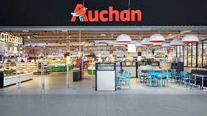
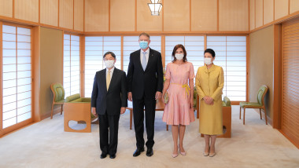

Citatul zilei
De fiecare data cand inchizi o scoala, va trebui sa construiesti o inchisoare.Intrebarea zilei:
Urmare noilor decizii ale retailerului Auchan, sunteti de acord sa fiti proprii vostri casieri?
Auchan - un pas inainte???
Retailerul francez Auchan a reacționat după ce Marian Godină, unul dintre cei mai cunoscuți polițiști din mediul online, a comentat printr-o postare publicată pe Facebook decizia lanțului de hipermarketuri de a renunța la casieri și de a-i înlocui cu case de tip self service. Retailerul francez Auchan a reacționat după ce Marian Godină, unul dintre cei mai cunoscuți polițiști din mediul online, a comentat printr-o postare publicată pe Facebook decizia lanțului de hipermarketuri de a renunța la casieri și de a-i înlocui cu case de tip self service. Mai multe detalii aici
O noua zi de razboi
Războiul declanșat de președintele Rusiei Vladimir Putin în Ucraina continuă și în ziua cu numărul 379. Dimineața a început cu noi alerte de raid aerian în fiecare regiune a țării vecine, avertizând asupra unui potențial atac rusesc. Secretarul general al ONU, António Guterres, efectuează marţi o vizită în Ucraina, a declarat purtătorul său de cuvânt. Cancelarul Germaniei, Olaf Scholz, afirmă că Occidentul nu va lua niciodată nicio decizie cu privire la Ucraina pe la spatele cetățenilor săi, potrivit Rador. Mai multe detalii aici
Vizita lui Iohanis in japonia
Preşedintele Klaus Iohannis şi soţia sa, Carmen, au fost primiţi, marţi, de Majestatea Sa Naruhito, Împăratul Japoniei, şi de Majestatea Sa Masako, Împărăteasa Japoniei. Preşedintele Klaus Iohannis şi premierul Japoniei, Fumio Kishida, au semnat, marţi, la Tokyo, Declaraţia comună de instituire a Parteneriatului strategic dintre România şi Japonia. Președintele Klaus Iohannis a declarat că Japonia este cel mai mare investitor din Asia în România și a apreciat activitatea companiilor nipone active pe piața românească. Iohannis a vorbit despre contribuția companiilor japoneze la proiecte de infrastructură complexă, precum construcția podului suspendat de peste Dunăre, de la Brăila. Mai multe detalii aici
Conflict pe tema pensiilor
Lupte de stradă la Lyon și Paris, în condițiile în care Franța este aproape de a fi paralizată de a șasea zi de grevă națională. Aproape 300 de proteste au fost programate în toată țara, iar sindicatele vorbesc deja de o mobilizare istorică. Speră să scoată astăzi în stradă cel puțin două milioane de oameni, ca să convingă administrația Macron să renunțe la reforma pensiilor. Informaţiile publicate pe site-ul Digi24.ro pot fi preluate, în conformitate cu legislația aplicabilă, doar în limita a 120 de caractere. Mai multe detalii aici
Evenimente urmatoare
Metallica din nou in Romania!
Cluj Arena
Vineri, 25 august 2023
Countdown timerMax.: +8°
Min.: 0°
Daca sunteti in posesia unor informatii care pot face obiectul unei stiri, sunati la 0123456789 sau scrieti un email la ex@mail.com. Va multumim.